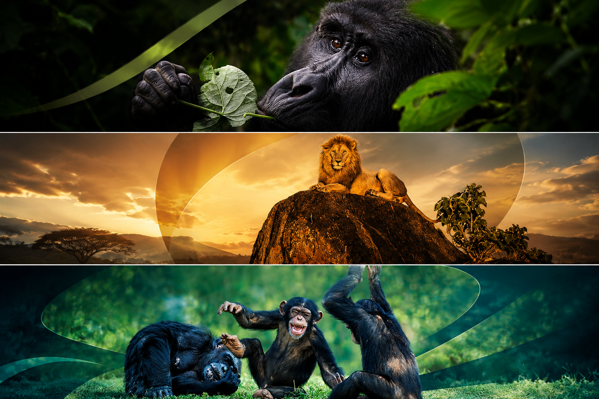

An extraordinary 11-day cross-border expedition uniting the finest wildlife, great ape, and scenic highlights of Rwanda and Uganda. Begin in Kigali before ascending to Volcanoes National Park for golden monkey tracking. Cross into Uganda's legendary Bwindi Impenetrable Forest for mountain gorilla trekking, seek tree-climbing lions and cruise the Kazinga Channel in Queen Elizabeth National Park, track wild chimpanzees in Kibale Forest, and discover the roaring power of Murchison Falls.

Arrival in Kigali, City Orientation Tour & Transfer to Volcanoes National Park
Endangered Golden Monkey Tracking & Iby'Iwacu Cultural Village Experience
Scenic Cross-Border Transfer to Bwindi Impenetrable National Park
Mountain Gorilla Trekking in Bwindi Rainforest & Batwa Cultural Visit
Transfer to Queen Elizabeth National Park via Ishasha Tree-Climbing Lions
Kasenyi Plains Morning Game Drive & Kazinga Channel Boat Safari
Scenic Transfer to Kibale Forest National Park & Bigodi Wetland Walk
Chimpanzee Tracking in Kibale Forest & Transfer to Murchison Falls National Park
Northern Delta Morning Savannah Game Drive & Victoria Nile Boat Cruise
Top of Murchison Falls & Ziwa Rhino Sanctuary Guided Tracking
Transfer to Entebbe Airport & Departure Flight
Welcome to East Africa! Upon arrival at Kigali International Airport, meet your Roots East Africa Adventure driver guide. Begin with a guided orientation tour of Kigali, including an insightful and moving visit to the Kigali Genocide Memorial. Enjoy lunch before taking a scenic drive northwest through Rwanda's terraced emerald hills toward Musanze at the base of the Virunga Volcanoes. Check into your safari lodge for dinner and rest.
Report to Kinigi park headquarters after breakfast for a briefing on tracking endangered golden monkeys. Hike into the bamboo forest slopes to observe these lively primates forage, leap through the canopy, and flash their vibrant coats. In the afternoon, visit the Iby'Iwacu Cultural Village (Gorilla Guardians) for traditional Intore dancing, drumming, and royal cultural demonstrations before returning to your lodge for dinner.
After breakfast, check out and embark on a picturesque journey crossing the border from Rwanda into southwestern Uganda via Cyanika. Climb into the spectacular terraced highlands of Kigezi, taking in breathtaking panoramas of verdant valleys and rural homesteads. Arrive at your lodge bordering Bwindi Impenetrable National Park in the afternoon, check in, and enjoy dinner while preparing for tomorrow's gorilla trek.
Rise early for breakfast, collect your packed lunch, and transfer to park headquarters for a vital briefing by UWA rangers. Venture into Bwindi's misty rainforest with expert trackers, navigating tangled foliage and mountain slopes until you make contact with your habituated gorilla family. Spend an unforgettable hour observing these gentle giants in their wild sanctuary. In the afternoon, enjoy an authentic Batwa community cultural visit before returning to the lodge for dinner.
Following breakfast, travel north to Queen Elizabeth National Park, entering through the southern Ishasha sector. Scan the spreading branches of mature sycamore fig trees for unique tree-climbing lions resting from the midday heat, along with topis and buffalos. Enjoy lunch en route and continue to the central sector of the park, checking into your safari lodge for dinner overlooking the savannah.
Embark at first light on a game drive across the Kasenyi plains, tracking lions, leopards, spotted hyenas, large herds of elephants, and Cape buffalos. Return to the lodge for lunch. In the afternoon, take a renowned two-hour boat safari along the Kazinga Channel, gliding alongside massive pods of hippos, basking crocodiles, and bathing elephant herds, while spotting pelicans, skimmers, and fish eagles along the shoreline. Return to camp for dinner.
After breakfast, take a scenic drive north toward Kibale Forest National Park, passing scenic crater lakes and tea estates near Fort Portal. Check into your lodge nestled in the rainforest and enjoy lunch. In the afternoon, take a guided eco-walk through Bigodi Wetland Sanctuary, spotting primates including red colobus monkeys and bird species like the Great Blue Turaco. Dinner and overnight at your forest lodge.
Gather at Kanyanchu Ranger Station after breakfast for a briefing by UWA rangers before entering the rainforest to track habituated chimpanzees. Spend an exhilarating hour observing them feed, groom, and swing through the canopy. Following lunch, embark on a scenic drive northeast through Kagadi and Hoima toward Murchison Falls National Park, arriving at your safari lodge in the evening for dinner.
Wake for an early morning game drive across the northern savannahs of Murchison Falls. Track Rothschild's giraffes, African elephants, Cape buffalos, Jackson's hartebeests, and prowling lions. Return to your lodge for lunch. In the afternoon, embark on the legendary boat safari up the Victoria Nile toward the bottom of Murchison Falls, viewing large pods of hippos, basking Nile crocodiles, and diverse waterbirds. Return to camp for dinner.
Visit the Top of the Falls in the morning to witness the Victoria Nile crash through a seven-meter gorge before plunging 43 meters below. Afterward, depart southward to Ziwa Rhino Sanctuary. Embark on a guided on-foot rhino tracking safari with sanctuary rangers to view wild white rhinos. Enjoy dinner and a restful overnight stay near the sanctuary or en route.
Enjoy breakfast before completing your journey southward to Kampala and Entebbe. Stop for lunch en route and pause at local artisan craft markets for souvenirs. Your driver guide will transfer you to Entebbe International Airport for your departure flight home, carrying unforgettable memories of an extraordinary 11-day Rwanda and Uganda expedition.